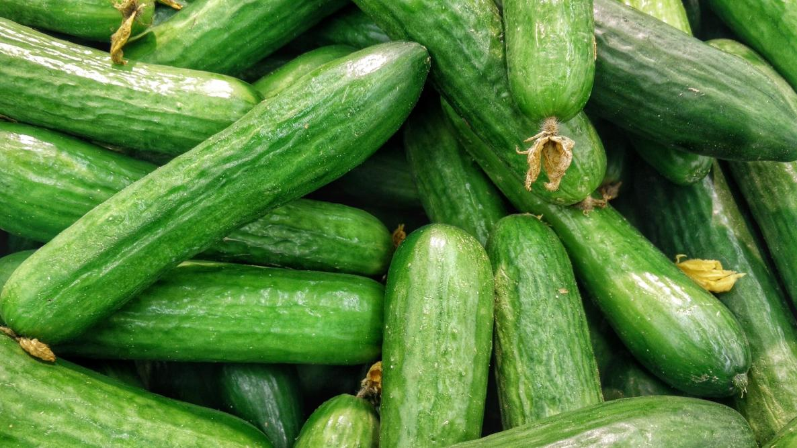

1.מלפפון
מחיר: ₪3.99 לק"ג
הנה כמה יתרונות של מלפפון:
הידרציה: למלפפונים יש תכולת מים גבוהה, מה שהופך אותם לבחירה לחות ומרעננת, במיוחד במזג אוויר חם.
עשירים בחומרי תזונה: הם דלים בקלוריות ומקור טוב לויטמינים ומינרלים, כולל ויטמין K, ויטמין C, אשלגן ומגנזיום.
נוגדי חמצון: מלפפונים מכילים נוגדי חמצון שונים המועילים לבריאות, ביניהם פלבנואידים וטאנינים, בעלי תכונות אנטי דלקתיות.
בריאות העור: בשל תכולת המים הגבוהה שלהם ותרכובות מסוימות, מלפפונים משמשים לעתים קרובות בשגרת טיפוח העור כדי להרגיע ולחות את העור.
בריאות מערכת העיכול: תכולת הסיבים והמים במלפפונים יכולה לעזור לתמוך בעיכול ולמנוע עצירות.
2.עגבניה

מחיר: ₪5.30 לק"ג
הנה כמה יתרונות של עגבניה:
עשיר בחומרי תזונה: עגבניות מהוות מקור טוב למספר ויטמינים ומינרלים, כולל ויטמין C, אשלגן, חומצה פולית וויטמין K. הן מכילות גם את נוגד החמצון ליקופן, אשר נקשר ליתרונות בריאותיים שונים.
בריאות הלב: נוגדי החמצון והאשלגן בעגבניות מועילים לבריאות הלב. ליקופן, במיוחד, נקשר עם סיכון מופחת למחלות לב.
תכונות המלחמה בסרטן: כמה מחקרים מצביעים על כך שהליקופן בעגבניות עשוי לסייע בהפחתת הסיכון לסוגים מסוימים של סרטן, במיוחד סרטן הערמונית.
בריאות העור: ויטמין C ונוגדי חמצון אחרים בעגבניות יכולים לתרום לעור בריא יותר ועשויים לסייע בהגנה מפני נזקי השמש.
ניהול משקל: עגבניות דלות בקלוריות ועשירות בסיבים, מה שהופך אותן לבחירה טובה עבור אלה המעוניינים לנהל את משקלם.
בריאות מערכת העיכול: תכולת הסיבים בעגבניות יכולה לתמוך בבריאות מערכת העיכול ובסדירות.
3.פלפל

מחיר: ₪7.99 לק"ג
הנה כמה יתרונות של פלפל:
עשיר בחומרים מזינים: פלפלים הם מקור טוב לויטמינים A, C ו-K, כמו גם חומצה פולית ואשלגן. הצבעים התוססים של הפלפלים מעידים על נוכחותם של נוגדי חמצון שונים, המועילים לבריאות הכללית.
נוגדי חמצון: פלפל מכיל מגוון של נוגדי חמצון, כולל קרוטנואידים ופלבונואידים, אשר נקשרו ליתרונות בריאותיים רבים, כולל הפחתת דלקת ושיפור בריאות הלב.
בריאות העין: תכולת ויטמין A הגבוהה בפלפלים מועילה לבריאות העיניים ועשויה לסייע בהפחתת הסיכון לניוון מקולרי הקשור לגיל.
תמיכה חיסונית: תכולת ויטמין C בפלפלים יכולה לעזור לתמוך במערכת חיסונית בריאה ולהגן מפני מחלות מסוימות.
ניהול משקל: פלפלים דלים בקלוריות ועשירים בסיבים, מה שהופך אותם לתוספת משביעה ומזינה לארוחות, שיכולה לתמוך בניהול משקל.